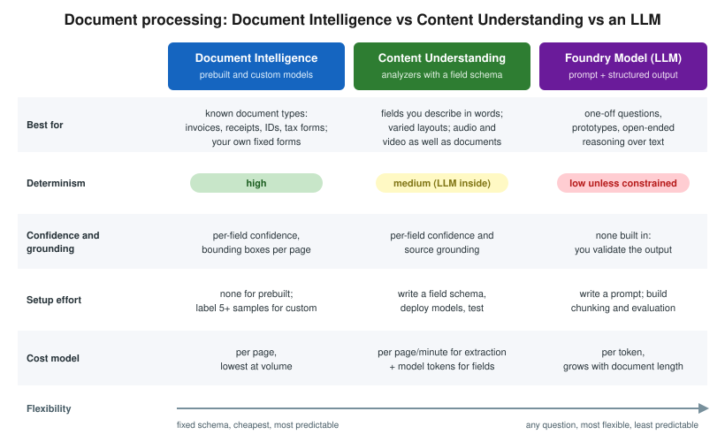

Content Understanding: Multimodal Analyzers
|
This content was generated with the assistance of AI and should be verified against the official documentation before being relied on in production. |
This page targets Azure CLI 2.90.0, the Content Understanding REST API 2025-11-01 (GA) and
2026-06-01-preview, and the client libraries azure-ai-contentunderstanding 1.1.0 (Python; 1.2.0b3 for the
preview), Azure.AI.ContentUnderstanding 1.1.0 (.NET), com.azure:azure-ai-contentunderstanding 1.0.0 (Java) and
@azure/ai-content-understanding 1.1.0 (JavaScript), checked on 2026-10-06. Some Learn quickstarts still install
preview packages; the versions above are GA.
Azure Content Understanding in Foundry Tools turns documents, images, audio and video into structured output. You describe what you want in an analyzer: the content to extract, the categories to classify into, and the fields to return. Content Understanding combines extraction models (the same family as Document Intelligence read and layout) with generative models you deploy, and returns every field with a confidence score and a link back to where it came from (grounding).
Versions
-
GA
2025-11-01: analyzers, prebuilt analyzers, field extraction, classification, and bring-your-own model deployments. -
Preview
2026-06-01-preview: agentic mode (fields built from multi-step reasoning or calculations across a document), synchronous (inline) analyze for small inputs, in-page segmentation, semantic chunking, and signature detection.
Preview-era analyzers (2024-12-01-preview, 2025-05-01-preview) need migration: the GA API requires default model
deployments and changes some schema properties. See the migration guide in the references.
Analyzers
An analyzer has a base analyzer, a configuration and an optional field schema. Each field has a type and one of three methods:
| Method | Meaning |
|---|---|
|
The value appears in the content as written (a contract party, an invoice number). Returned with grounding. |
|
The value is one of a list of categories you give (contract type, sentiment). |
|
The value is produced from the content (a summary, a chapter title, a calculated total). |
Analyzers can also segment and classify: split a file into parts and assign each part to one of up to 200 categories, optionally routing each category to its own analyzer.
Prebuilt analyzers
-
RAG-oriented:
prebuilt-documentSearch,prebuilt-imageSearch,prebuilt-audioSearch,prebuilt-videoSearchproduce Markdown, descriptions, transcripts and summaries ready for indexing. -
Content extraction:
prebuilt-readandprebuilt-layout, which need no generative model. -
Domain:
prebuilt-invoice,prebuilt-receipt,prebuilt-idDocumentand others.
Model deployments
Field extraction, classification and the search analyzers call models you deploy on the Foundry resource: a
completion model (GPT-4.1, GPT-4.1-mini, GPT-5.x) and an embedding model (text-embedding-3-large). You set default
deployments once per resource, and can override them per analyzer. Their tokens are billed on top of the Content
Understanding extraction price.
Limits per modality
| Modality | Limits (GA) |
|---|---|
Documents |
PDF, images, Office files, HTML, text; up to 200 MB and 300 pages per file. |
Images |
JPEG, PNG, BMP, HEIF, TIFF; up to 200 MB. |
Audio |
WAV, MP3 and other common formats; up to 300 MB or 2 hours (longer with Blob input). |
Video |
MP4, MOV and other common formats; up to 4 GB and 2 hours. |
Content Understanding vs Document Intelligence vs an LLM

-
Document Intelligence wins on known document types with fixed fields, on cost per page, on page geometry and on determinism (Document Intelligence: Read, Layout and Prebuilt Models).
-
Content Understanding wins when fields need interpretation, when you describe fields instead of labeling samples, and when you also process audio and video.
-
A plain LLM call is the fastest to prototype, but you own chunking, prompt design, validation and grounding.
Provisioning
In the Azure portal
-
Use the Foundry resource
foundry-bookshelfin a region that supports Content Understanding. -
Deploy
gpt-4.1-miniandtext-embedding-3-largeunder Models + endpoints in the Foundry portal. -
Open Content Understanding Studio (
https://contentunderstanding.ai.azure.com), or the Foundry portal’s Content Understanding experience, select the resource, and set the default model deployments. -
Create an analyzer from a template, upload samples, refine the field schema, and test.
With the Azure CLI
for m in "gpt-4.1-mini 2025-04-14" "text-embedding-3-large 1"; do
set -- $m
az cognitiveservices account deployment create --name "$FOUNDRY" --resource-group "$RG" \
--deployment-name "$1" --model-name "$1" --model-version "$2" --model-format OpenAI \
--sku-name GlobalStandard --sku-capacity 50
done
TOKEN=$(az account get-access-token --resource https://cognitiveservices.azure.com --query accessToken -o tsv)
curl -s -X PATCH "https://$FOUNDRY.cognitiveservices.azure.com/contentunderstanding/defaults?api-version=2025-11-01" \
-H "Authorization: Bearer $TOKEN" -H "Content-Type: application/merge-patch+json" \
-d '{"modelDeployments":{"gpt-4.1-mini":"gpt-4.1-mini","text-embedding-3-large":"text-embedding-3-large"}}'Create an analyzer and analyze
A custom analyzer for publisher contracts:
curl -s -X PUT \
"https://$FOUNDRY.cognitiveservices.azure.com/contentunderstanding/analyzers/publisher-contract?api-version=2025-11-01" \
-H "Authorization: Bearer $TOKEN" -H "Content-Type: application/json" \
-d '{
"description": "Bookshelf publisher distribution contracts",
"baseAnalyzerId": "prebuilt-document",
"models": {"completion": "gpt-4.1-mini"},
"config": {"returnDetails": true, "estimateFieldSourceAndConfidence": true},
"fieldSchema": {"fields": {
"Publisher": {"type": "string", "method": "extract", "description": "Publisher legal name"},
"Territories": {"type": "array", "items": {"type": "string"}, "method": "extract"},
"DiscountPercent":{"type": "number", "method": "extract", "description": "Trade discount granted to Bookshelf"},
"ContractType": {"type": "string", "method": "classify", "enum": ["distribution", "consignment", "print-on-demand"]},
"RenewalSummary": {"type": "string", "method": "generate", "description": "One sentence on renewal and notice terms"}
}}
}'
curl -s -i -X POST \
"https://$FOUNDRY.cognitiveservices.azure.com/contentunderstanding/analyzers/publisher-contract:analyze?api-version=2025-11-01" \
-H "Authorization: Bearer $TOKEN" -H "Content-Type: application/json" \
-d '{"inputs":[{"url":"https://stbookshelf.blob.core.windows.net/media/contracts/northwind-press.pdf"}]}'
# 202 Accepted: poll the Operation-Location URL until "status" is "Succeeded"from azure.ai.contentunderstanding import ContentUnderstandingClient
from azure.ai.contentunderstanding.models import AnalysisInput
from azure.identity import DefaultAzureCredential
client = ContentUnderstandingClient(
endpoint="https://foundry-bookshelf.cognitiveservices.azure.com/",
credential=DefaultAzureCredential(),
)
poller = client.begin_analyze(
analyzer_id="publisher-contract",
inputs=[AnalysisInput(url="https://stbookshelf.blob.core.windows.net/media/contracts/northwind-press.pdf")],
)
result = poller.result()
fields = result.contents[0].fields
print(fields["Publisher"].value, fields["DiscountPercent"].value, fields["DiscountPercent"].confidence)using Azure;
using Azure.AI.ContentUnderstanding;
using Azure.Identity;
var client = new ContentUnderstandingClient(
new Uri("https://foundry-bookshelf.cognitiveservices.azure.com/"), new DefaultAzureCredential());
Operation<AnalyzeResult> operation = await client.AnalyzeAsync(
WaitUntil.Completed, "prebuilt-videoSearch",
new[] { new AnalyzeInput { Url = new Uri("https://stbookshelf.blob.core.windows.net/media/interview-042.mp4") } });
foreach (AnalysisContent segment in operation.Value.Contents)
Console.WriteLine(segment.Fields["Summary"].Value);import com.azure.ai.contentunderstanding.ContentUnderstandingClient;
import com.azure.ai.contentunderstanding.ContentUnderstandingClientBuilder;
import com.azure.ai.contentunderstanding.models.*;
import com.azure.identity.DefaultAzureCredentialBuilder;
import java.util.List;
ContentUnderstandingClient client = new ContentUnderstandingClientBuilder()
.endpoint("https://foundry-bookshelf.cognitiveservices.azure.com/")
.credential(new DefaultAzureCredentialBuilder().build())
.buildClient();
AnalyzeResult result = client.beginAnalyze("prebuilt-read",
List.of(new AnalyzeInput().setUrl("https://stbookshelf.blob.core.windows.net/media/back-cover-0917.jpg")))
.getFinalResult();
System.out.println(result.getContents().get(0).getMarkdown());Use cases
| Scenario | Feature | Why this feature | Example input → output |
|---|---|---|---|
Bookshelf: chaptering and summarizing author-interview videos |
|
Segments, transcripts and summaries in one call, ready for |
|
Bookshelf: terms from publisher contracts |
Custom analyzer with |
Fields are described, not labeled; renewal terms need interpretation. |
Contract PDF → publisher, territories, 40% discount, |
Contract clause extraction |
Custom analyzer, agentic mode (preview) |
Clauses that need cross-references. |
MSA → liability cap, termination notice |
Call-recording analytics |
Audio analyzer with generated fields |
Summary plus fields without a separate STT step. |
Call WAV → summary, reason for call, sentiment |
Marketing asset tagging |
Image analyzer with |
Your own taxonomy. |
Banner image → campaign, product line, tone |
When not to use it
-
For standard invoices, receipts and IDs at volume, Document Intelligence prebuilt models are cheaper and fully deterministic.
-
For plain transcription, use Speech to Text.
-
For a one-off question about one document, a Foundry Model prompt may be simpler. See Choosing a Foundry Tool (or a Foundry Model).
Clean up
curl -s -X DELETE \
"https://$FOUNDRY.cognitiveservices.azure.com/contentunderstanding/analyzers/publisher-contract?api-version=2025-11-01" \
-H "Authorization: Bearer $TOKEN"Related pages
-
Document Intelligence: Read, Layout and Prebuilt Models covers the deterministic prebuilt models.
-
Azure AI Search with Foundry Tools covers the Content Understanding skill in Azure AI Search.
-
Immersive Reader, Video Indexer and Retired Services compares Content Understanding video with Video Indexer.
-
Multimodal RAG covers multimodal retrieval in general.